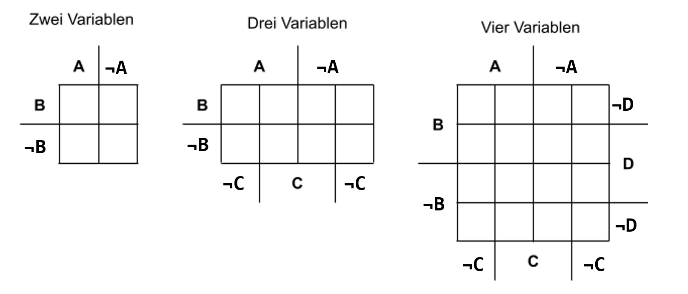

Beim Alarmanlagen-Beispiel aus 3.3 musstest du die Gesetze der Aussagenlogik „von Hand“ anwenden, um zu vereinfachen. Dabei übersieht man leicht eine Möglichkeit. Mit einem KV-Diagramm sieht man die Vereinfachung direkt.
Karnaugh-Veitch-Diagramme (kurz KV-Diagramme) sind eine grafische Darstellung boolescher Funktionen, die es ermöglicht, auf Basis von Wahrheitstabellen boolesche Funktionen zu vereinfachen. Jedes Feld entspricht genau einer Zeile der Wahrheitstabelle, also einem Minterm. Die Felder sind so angeordnet, dass sich benachbarte Felder in genau einer Variablen unterscheiden.

KV-Diagramme funktionieren von Hand nur bis etwa 4–6 Variablen. Chipdesigner setzen daher für reale Schaltungen mit Hunderten oder Tausenden Eingängen automatisierte Minimierungsalgorithmen (z. B. Quine-McCluskey oder Espresso) in professioneller EDA-Software (Electronic Design Automation) ein. Das Grundprinzip ist aber genau dasselbe wie beim KV-Diagramm: möglichst große Gruppen gemeinsamer Werte finden und daraus einen minimalen Ausdruck ableiten – nur eben automatisch für Schaltungen, die kein Mensch mehr überschauen könnte.
Berufsleben:
Regeln für die Gruppenbildung im KV-Diagramm:
Vereinfache die Schaltfunktionen unter Nutzung eines KV-Diagramms. Prüfe am Ende, ob das Distributivgesetz angewandt werden kann.
Gegeben ist das KV-Diagramm einer Funktion f(A,B,C,D) (Anordnung wie in der Vorlage für vier Variablen):
| A | ¬A | ||||
|---|---|---|---|---|---|
| B | 1 | 1 | 1 | 0 | ¬D |
| 1 | 0 | 0 | 0 | D | |
| ¬B | 0 | 0 | 0 | 0 | |
| 0 | 1 | 1 | 0 | ¬D | |
| ¬C | C | ¬C | |||